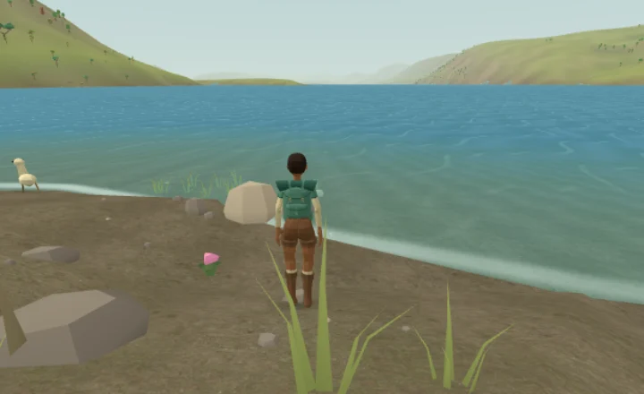

06.A WALKING CONTROLS
Telugu States Atlas
Test the camera on the Bapatla plain, or follow the Nandyal waterline. You can use both thumbs while jumping and sprinting.

TRAVELLER
Push the joystick forward to walk. Hold Sprint, double-tap to lock it, or push the stick to its edge; wading and swimming are automatic. Android Back returns here.
01 / ON THE GROUND
4 WALKSTest a place

NANDYALReservoir shallows
Water ›

HYDERABADTimber acre
Fence ›

JAGITIALCanopy trail
Forest ›

Y.S.R. KADAPAEscarpment walk
Rock ›Look uphill from Reservoir shallows → · 16.038887° N, 78.370482° E. Same starting point, facing the trees.
Revisit the reservoir upper bank → · 16.038845° N, 78.371004° E. Detail starts on Auto; your later choices are kept. All 12 stops are in the field guide. For an assigned plot, visit demo_user1’s acre →
Saved readings
No completed walks yet. In the field menu, choose Measure this walk → Start measurement. Readings stay on this phone.